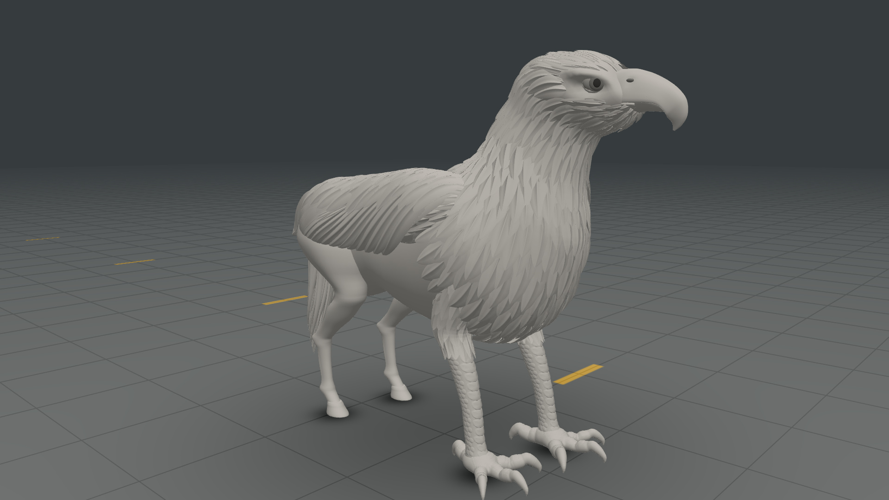
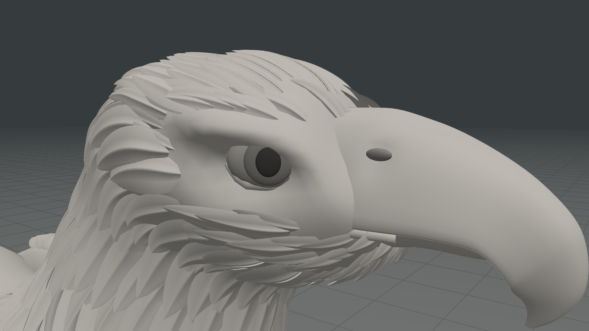

Hippogriff E.1
Silver-grey plumage, amber eyes and dapple-grey coat. Select Hippogriff in Creature Lab to inspect the finish in motion.
Full-resolution studies
Motion
Studio turntableWoodland lighting turntableLocomotion and flightMatched D.3 comparisons

D.3 clay · Three-quarter E.1 silver-grey · Three-quarter
E.1 silver-grey · Three-quarter
D.3 clay · Head and eyes E.1 silver-grey · Head and eyes
E.1 silver-grey · Head and eyesPerformance and regression
Median time to draw and read back one 960 × 540 frame on Chromium’s SwiftShader software adapter was 487 ms for D.3 and 1445 ms for E.1. Both measurements used the same folded pose, camera, LOD 1, four warmup frames and 30 timed frames. Hardware GPU performance is unmeasured.
The finish adds four floats per packed vertex and uses the existing draw batches. The eleven stills use LOD 0 at 1920 × 1080. Videos use LOD 1 at 960 × 540 and 18 fps. The planted-foot, suspension, stride and landing regression passed against the approved rig.